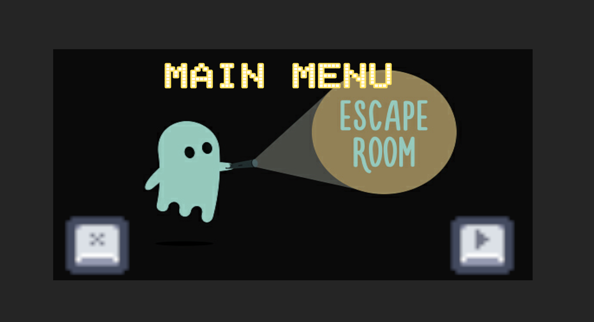
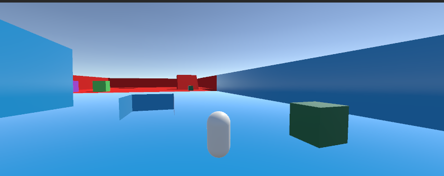
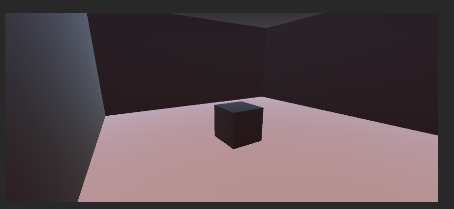
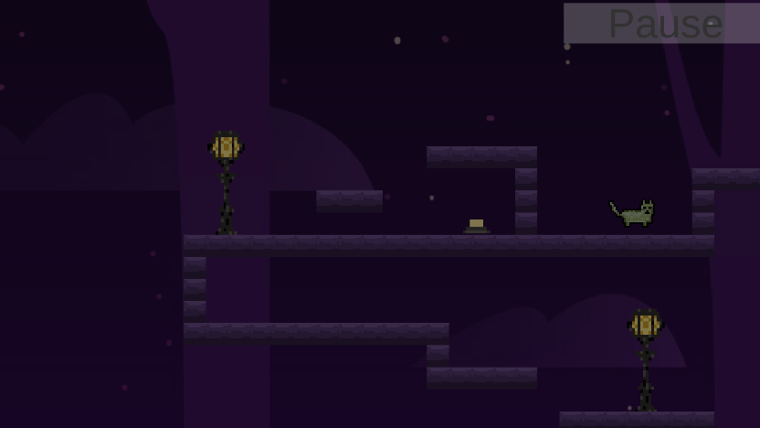
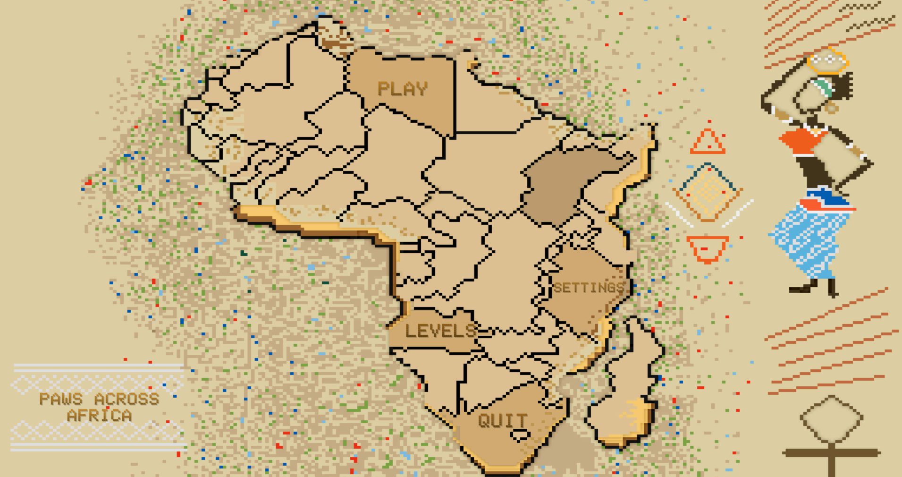

Escape the Room
A 3D puzzle prototype in which the player must find the keys, solve puzzles and escape the room.

The Physics of Push and Pull
A 3D prototype exploring the physics of push and pull in which the player pushes with constant force vs an impulsive push and pulls by magnetism vs grabbing a handle and dragging the object into a hole.

Sound In A Closed Space
For this prototype, I really wanted to look at how the sound system in unity works and how sound changes with different environments. And particularly, to follow the theme, I looked at sound in a closed environment. To test this, I chose closed rooms of different sizes and compared it with a sound source in the open air.

Find The Switch…
A simple 2D puzzle platformer game in which the player must get to the switches to turn on the lights.

Paws Across Africa
A 3D adventure game in which the player plays as multiple animals and traverses various countries in Africa to find their family back home in South Africa